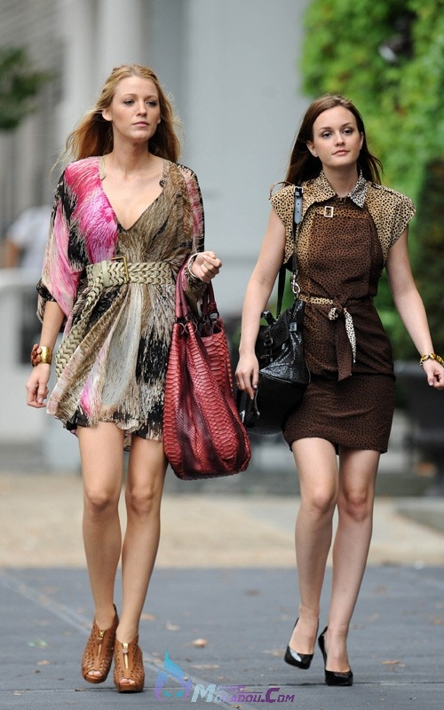

正文:
别走小清新！！！胸大是走不起小清新路线的！！！
你有这优势就要去发扬！不要遮掩起来，但我的意思也不是说要暴露什么的。
其实Taylor的风格不是小清新风格呀，你所谓的“清新”风格都是她的平胸造成的假象。她走的就是欧美风呀，平胸而已。
你看一下Kat Dennings这套着装。同样的裙子，平胸和大胸穿起来完全是两种感觉。
反对高票中那句穿宽大的衣服。这大概就是平胸女的误解（no offense）。事实上大胸穿宽大的衣服是遮不了胸的。反而侧面会看起来很厚，很像孕妇装。找不到我要的图，请题主脑补一下。
但我认为，宽大≠宽松。你可以穿宽松衣服，但问题是，要把衣服塞进去。如图下
当然如果你执意要走小清新路线的话，我也和上面匿名用户一样，推荐雪纺。不过雪纺也看图案啦，你看下图Blake穿的也是雪纺但它不是小清新啊。这个你懂我的意思啦不扩展说了。给出下图是要让你注意，对大胸来说，腰带为万能之物。
它的功能为：1.突出腰线，显比例。2：防止大胸侧面厚的悲剧。

上面一直在说夏天的穿着，是因为我觉得对大胸来说夏天才是最难办的时候。至于秋冬，限制大胸穿衣的条件就比较少了。比如说大衣一批，胸就遮住了。走学院风英伦风的方法请参考得票最高的那个答案~
此外我还有一些小建议。
1.别穿高领的。我这人比较矫情，就算冻死我也不穿高领。为什么？你不觉得穿高领会显得胸下垂吗？
2.善用配饰。围巾、大项链通通用起来。我很喜欢穿背心，但有时也会担心走光的问题。所以夏秋穿背心的时候我都会披上一条长丝巾，点缀之外还能遮胸，一举两得。夸张的短项链可以让人把目光从胸转移到配饰上。但也要注意，大胸千万别带长项链。